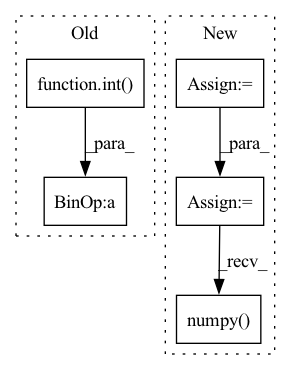

Pattern ID :33245

Before Change
self.nCh = nCh
self.ker = kernel
d = int(self.input_dim/self.ker)
feature_dim = 2*nCh
self.module1 = nn.ModuleList([ MPS(input_dim=self.ker**2,
output_dim=self.virtual_dim,
nCh=nCh, bond_dim=bond_dim, cudaFlag=self.cudaFlag,
feature_dim=feature_dim, parallel_eval=parallel_eval,
adaptive_mode=adaptive_mode, periodic_bc=periodic_bc)
for i in range(d**2)])
self.BN1 = nn.BatchNorm1d(d**2,affine=True)
d = int(d/self.ker)
feature_dim = 2*self.virtual_dim
self.module2 = nn.ModuleList([ MPS(input_dim=self.ker**2,
output_dim=self.virtual_dim,
nCh=self.virtual_dim, bond_dim=bond_dim, cudaFlag=self.cudaFlag,
feature_dim=feature_dim, parallel_eval=parallel_eval,
adaptive_mode=adaptive_mode, periodic_bc=periodic_bc)
for i in range(d**2)])
self.BN2 = nn.BatchNorm1d(d**2,affine=True)
d = int(d/self.ker)
self.module3 = nn.ModuleList([ MPS(input_dim=self.ker**2,
output_dim=self.virtual_dim,
nCh=self.virtual_dim, bond_dim=bond_dim, cudaFlag=self.cudaFlag,
feature_dim=feature_dim, parallel_eval=parallel_eval,
adaptive_mode=adaptive_mode, periodic_bc=periodic_bc)
for i in range(d**2)])
self.BN3 = nn.BatchNorm1d(d**2,affine=True)
self.mpsFinal = MPS(input_dim=len(self.module3), output_dim=output_dim, nCh=1,
After Change
self.input_dim = input_dim
self.virtual_dim = bond_dim
self.kScale = 4
nCh = self.kScale**2 * nCh
self.input_dim = self.input_dim/self.kScale
self.nCh = nCh
self.ker = kernel
// pdb.set_trace()
iDim = (self.input_dim/(self.ker))
// d = int(self.input_dim/self.ker)
feature_dim = 2*nCh
self.module1 = nn.ModuleList([ MPS(input_dim=(self.ker)**2,
output_dim=self.virtual_dim,
nCh=nCh, bond_dim=bond_dim,
feature_dim=feature_dim, parallel_eval=parallel_eval,
adaptive_mode=adaptive_mode, periodic_bc=periodic_bc)
for i in range(torch.prod(iDim))])
self.BN1 = nn.BatchNorm1d(torch.prod(iDim).numpy(),affine=True)
iDim = iDim/self.ker
// d = int(d/self.ker)
feature_dim = 2*self.virtual_dim
self.module2 = nn.ModuleList([ MPS(input_dim=self.ker**2,
output_dim=self.virtual_dim,
nCh=self.virtual_dim, bond_dim=bond_dim,
feature_dim=feature_dim, parallel_eval=parallel_eval,
adaptive_mode=adaptive_mode, periodic_bc=periodic_bc)
for i in range(torch.prod(iDim))])
self.BN2 = nn.BatchNorm1d(torch.prod(iDim).numpy(),affine=True)
iDim = iDim/self.ker
// d = int(d/self.ker)
self.module3 = nn.ModuleList([ MPS(input_dim=self.ker**2,
output_dim=self.virtual_dim,
nCh=self.virtual_dim, bond_dim=bond_dim,
feature_dim=feature_dim, parallel_eval=parallel_eval,
adaptive_mode=adaptive_mode, periodic_bc=periodic_bc)
for i in range(torch.prod(iDim))])
self.BN3 = nn.BatchNorm1d(torch.prod(iDim).numpy(),affine=True)
self.mpsFinal = MPS(input_dim=len(self.module3), output_dim=output_dim, nCh=1,
bond_dim=bond_dim, feature_dim=feature_dim,
In pattern: SUPERPATTERN
Frequency: 3
Non-data size: 5
Instances
Fragment ID: 95996600
Project Name: raghavian/lotenet_pytorch
Commit Name: 12b1ac7a353e47b911149baa02e97c05f8858b54
Time: 2020-07-01
Author: raghav@di.ku.dk
File Name: models/lotenet.py
M Class Name: loTeNet
N Class Name: loTeNet
M Method Name: __init__(18)
N Method Name: __init__(19)
M Parent Class: nn.Module
N Parent Class: nn.Module
M File Name: models/lotenet.py
N File Name: models/lotenet.py
M Start Line: 10
M End Line: 55
N Start Line: 17
N End Line: 63
'>
Before Change
vec = torch.take(self.centroids[self.nbits], bins)
for i in range(self.num_hadamard):
vec = self.irht(vec, int(seed + (self.num_hadamard - 1) - i))
return (scale * vec)[:int(dim)].cpu().numpy()
// packing the quantization values to bytes
def to_bits(self, int_bool_vec):
After Change
total_dim = int(metadata[1])
curr_index = 0
vec = []
for k in range(2, max(metadata.keys()) + 1, 2):
scale = metadata[k]
dim = int(metadata[k + 1])
vec.append(self.decompress_slice(bins[curr_index:curr_index + dim], scale, dim, seed))
curr_index += dim
vec = torch.cat(vec)
vec = vec[:total_dim]
return vec.cpu().numpy()
// packing the quantization values to bytes
def to_bits(self, int_bool_vec):
'>
Fragment ID: 95996605
Project Name: intel/openfl
Commit Name: c10577cb32201c45846d920f871e4bcab76e37ed
Time: 2023-01-13
Author: 30897761+yanivbi@users.noreply.github.com
File Name: openfl/pipelines/eden_pipeline.py
M Class Name: Eden
N Class Name: Eden
M Method Name: decompress(3)
N Method Name: decompress(5)
M Parent Class:
N Parent Class:
M File Name: openfl/pipelines/eden_pipeline.py
N File Name: openfl/pipelines/eden_pipeline.py
M Start Line: 252
M End Line: 260
N Start Line: 337
N End Line: 354
'>
Before Change
row[idx] = float("-Inf")
// follow LibKGE protocol for ranking and ties
rank = int(torch.sum(row > true_score, dtype=torch.long))
num_ties = int(torch.sum(row == true_score, dtype=torch.long))
rank = rank + num_ties // 2 + 1
// compute MRR and Hits@k
mrr.append(1 / rank)
hits.append(int(rank <= k))
return mrr, hits
After Change
// get the scores of the true target subjects/objects
idx = 0 if direction == "s" else 2
targets = test_spo[:, idx].long()
arange = torch.arange(len(targets), dtype=torch.long, device="cpu")
true_scores = scores[arange, targets].view(-1, 1)
// remove the true subjects/objects from the scores so they don"t factor in rankings
scores = scores.clone()
scores[arange, targets] = float("-Inf")
// follow LibKGE protocol by taking the mean rank among all entities with same score
ranks = torch.sum(scores > true_scores, dim=1, dtype=torch.double)
num_ties = torch.sum(scores == true_scores, dim=1, dtype=torch.double)
ranks = ranks + num_ties // 2 + 1 // ranks are one-indexed
mrr = (1 / ranks).numpy()
hits = (ranks <= k).numpy()
return list(mrr), list(hits)
@torch.no_grad()
'>
Fragment ID: 95996705
Project Name: tsafavi/codex
Commit Name: 3dddca246e4fb616cef251bafb32dac648e8eedb
Time: 2020-07-08
Author: tsafavi@umich.edu
File Name: scripts/baseline.py
M Class Name: AnonimousClass
N Class Name: AnonimousClass
M Method Name: evaluate_rankings(5)
N Method Name: evaluate_rankings(5)
M Parent Class:
N Parent Class:
M File Name: scripts/baseline.py
N File Name: scripts/baseline.py
M Start Line: 129
M End Line: 151
N Start Line: 129
N End Line: 148